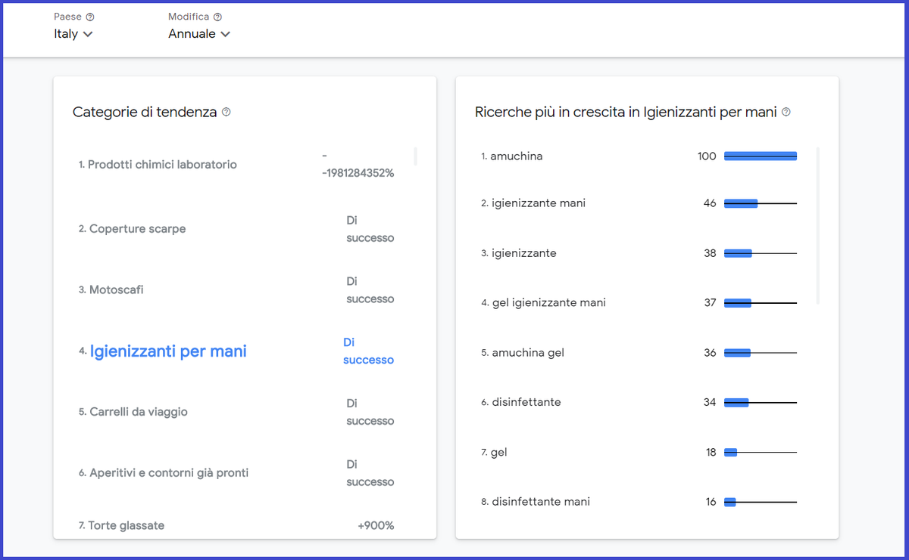

#APPROFONDIMENTI👥
⬆️📌Quali sono le categorie più ricercate su GOOGLE? 🔍
✅ Per rispondere a questa domanda Google ha lanciato un nuovo tool gratuito chiamato “Google Categorie Retail in crescita" nel sito “Think with Google”, per supportare le PMI italiane nel tenersi aggiornate.
✅ Uno strumento interattivo per capire quali sono le categorie di vendita al dettaglio in rapida crescita nella Ricerca Google. I dati vengono aggiornati quotidianamente per rispecchiare i cambiamenti negli interessi di Ricerca.
✅ Qui potremo notare come il comportamento dei consumatori è cambiato in maniera imprevedibile a causa della pandemia da coronavirus.
✅ Nell'ultimo anno in Italia, le categorie maggiormente ricercate, sono appunto per la maggior parte correlate alla pandemia, principalmente nella prevenzione sanitaria: prodotti chimici laboratorio, copertura scarpe o igienizzanti per le mani.
Che dire, uno strumento utile ed interessante.
Prova anche tu Think with Google 👇
https://www.thinkwithgoogle.com/feature/category-trends/it/year/it

Se lo desideri, iscriviti ai mie canali social per restare aggiornato ⬇️
Social MediaInoltre se hai trovato utile ed interessante questo articolo, non esitare a condividerlo, a lasciare un tuo mi piace 👍, o seguire la mia pagina Facebook per sostenermi e continuare ad informare. Grazie anticipatamente a chi vorrà farlo.